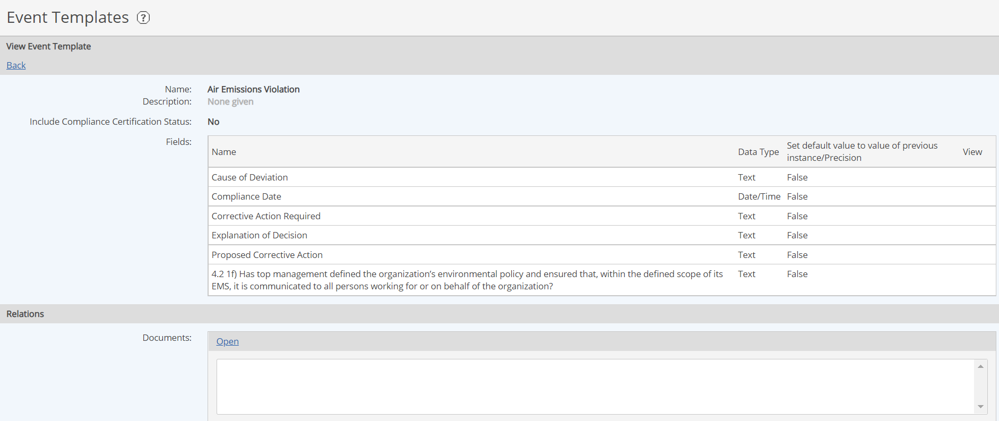

Event Templates are used to create Event Logs in the System Model. An event template defines the fields that are available for storing data when an event occurs.
When an event is created, the associated fields from the event template are then populated to provide additional information about the event.
Some typical uses for event templates are:
To view, create or edit Event Templates, you must have the Manage Events user right.
From the menu, select Setup > Event under Templates.
The existing Event Templates are displayed. The # Ref column indicates the number of Event Logs that use that template.
Expand the Search pane to use the search function to find a specific template.
To view the fields on an Event Template, right click the template and select View.
